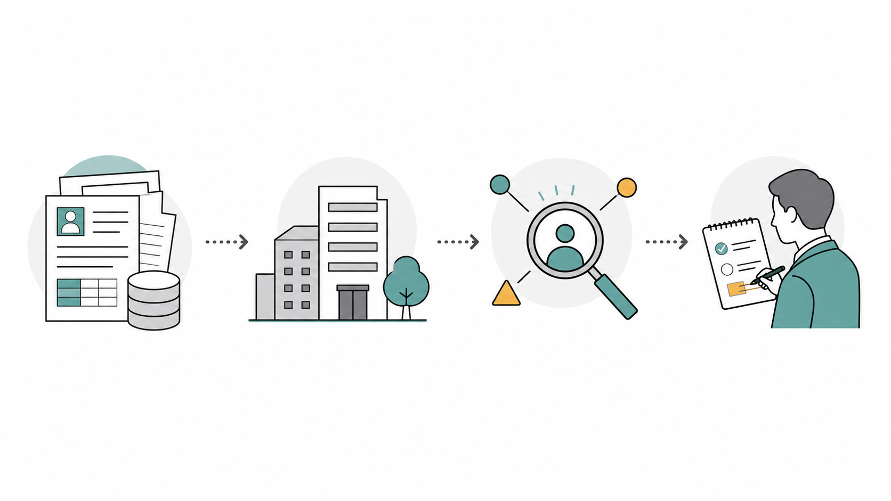

営業現場でAIの話になると、最初に出てくるのはメール文面の自動作成です。展示会後のお礼、休眠顧客への再接触、商談後のフォロー。白紙から書くより速く、言い回しの候補も出せます。
ただ、それだけで商談や受注につながるとまでは言い切れません。相手の状況を読まないまま生成された文章が増えれば、成果につながる前に、受け手からノイズとして見られるリスクがあります。
営業AIを導入するなら、最初に見るべき指標は送信数ではありません。見るべきなのは、誰に、なぜ、今、何を提案するのかを決める精度です。
買い手は、営業担当者に会う前に検討を進めている
B2Bの購買行動は、営業担当者との初回接点を持つ前から進んでいます。Gartnerの2025年発表では、B2B購買者の61%が営業担当者なしの購買体験を好むと回答しています。同じ発表では、73%が「関係のないアウトリーチを送るサプライヤーを積極的に避ける」とされています。
翌年のGartner発表でも同様の傾向が示されています。2026年の発表では、B2B購買者の67%が営業担当者を介さない体験を好み、45%が直近の購買でAIを使ったとされています。買い手側も、デジタルチャネルやAIを使いながら、営業担当者に会う前に検討を進めるケースが増えています。
この状況で、売り手が「とにかく接触回数を増やす」という発想のままだと、買い手の進み方と噛み合いません。相手はすでに情報を持っている。必要なのは一般的な説明ではなく、「自社の場合、何が論点になるのか」を整理してくれる接点です。
営業AIの役割は、営業担当者の代わりに雑に送ることではない。買い手がすでに見ている情報と、まだ整理できていない論点をつなぐところにある。
メール文面より先に、顧客理解の材料をそろえる
Salesforceの「State of Sales 7th Edition」では、AIエージェントを導入している営業プロの90%が、AIエージェントは顧客をよりよく理解するのに役立つと回答しています。一方で、同レポートではAIエージェント利用者の46%がデータ品質の問題が営業に悪影響を与えていると回答し、営業リーダーの51%が技術サイロによってAI施策が遅れる、または制限されると回答しています。
ここに、営業AI導入の現実があります。AIに良い文章を書かせるだけなら、導入は比較的簡単です。しかし、相手企業の事業、部署、直近の変化、過去接点、広告反応、問い合わせ履歴、商談履歴まで踏まえて次の一手を考えさせるには、AIが読める材料をそろえる必要があります。
マーケティング側にも同じ課題があります。Salesforceの「State of Marketing 9th Edition」では、顧客データソースを統合する能力に完全に満足しているマーケターは31%にとどまります。キャンペーン実行に必要なデータがリアルタイムで利用可能な場合でも、59%はIT部門の支援を必要としていると報告されています。
データがあることと、現場が次の行動に使えることは違います。営業AIが価値を出しやすい領域の一つは、この間を埋めるところにあります。

営業AIで設計したい4つの工程
営業AIを使うなら、いきなり「メールを作る」から始めないほうがいい。実務上は、次の4つの工程に分けると設計しやすくなります。
1. ターゲットを絞る
業種、企業規模、採用動向、導入済みツール、拠点、成長フェーズなどをもとに、今アプローチすべき企業群を決めます。営業担当者の勘を否定するのではなく、勘が働く前の候補出しを広く、速くするイメージです。
2. 企業ごとの変化を読む
ニュース、採用、役員変更、資金調達、組織再編、新規事業、サイト更新などから、相手企業で起きている変化を拾います。単なる情報収集ではなく、「営業上の意味」に変換することが大事になります。
3. 課題仮説を作る
自社サービスの機能紹介から入るのではなく、相手企業がいま抱えていそうな制約、機会損失、検討テーマを仮説化します。仮説が外れることはあります。それでも、何も読まずに送るより、会話の入口は作りやすくなります。
4. 次アクションを決める
メール、架電、SNS、ウェビナー案内、資料送付、既存接点からの紹介依頼など、どの接点が自然かを選びます。AIは文面作成だけでなく、接点の順番とタイミングの整理にも使えます。
HubSpotの2025年Sales Trends Report紹介では、AIをまったく使っていない営業担当者は8%のみとされています。AI利用者の84%が時間削減やプロセス最適化、83%が見込み客とのやり取りのパーソナライズ、82%がデータからの洞察に役立つと回答しています。営業AIの利用は、すでに「時短」だけに閉じていません。
ツール選びより先に、営業プロセスを言語化する
McKinseyのState of AIでは、AI利用が広がる一方で、より大きな成果につなげる企業では、ツール導入に加えてワークフロー再設計も重視されていると整理されています。営業も同じです。AIツールを足しても、営業プロセスが曖昧なままだと、AIは曖昧な仕事を速くするだけになります。
たとえば、ターゲットリストの条件が人によって違う。良い商談の定義がチームでそろっていない。企業調査の観点が属人化している。フォローのタイミングが担当者任せになっている。こうした状態でAIを入れると、短期的には便利に見えても、学習される判断基準がばらつきます。
逆に、営業プロセスを言語化できていれば、AIに任せる範囲と人間が判断する範囲を分けやすくなります。ターゲット抽出、企業調査、課題仮説の下書き、初回接点の提案、フォロー候補の提示まではAIが担う。商談の空気、意思決定者の温度感、提案の優先順位、最後の合意形成は人間が担う。この分担のほうが、現場にはなじみやすいはずです。
導入時には、送信数や作成文字数だけで判断するのは避けたいところです。ターゲット精度、商談化率、返信内容の質、失注理由の回収率、次アクション実行率、営業担当者が顧客理解に使える時間が増えたかを見る必要があります。
新規開拓では、量と個別性をどう両立するか
新規開拓では、量は必要です。少数の企業だけを丁寧に調べても、十分な商談数には届きません。一方で、量だけを追えば、買い手から見て関係のない接触が増えます。この矛盾を、人手だけで解くのは難しい場面があります。
営業AIを現実的に活用しやすいのは、この矛盾をほどく部分です。広い企業データから候補を抽出し、各社の文脈を調べ、課題仮説を作り、次に取るべき接点を提案する。営業担当者は、AIが出した材料を見て、優先順位を付け、商談や提案に集中する。
ValorizeAIのセールスAIも、こうした前工程の仕組み化と相性が良い領域です。ターゲット選定、リスト作成、企業調査、提案文作成、アプローチ、商談獲得までを一連の流れとして扱うことで、新規開拓を「担当者の頑張り」だけに寄せない営業体制を作りやすくなります。
営業AIの導入で大事なのは、AIに営業を丸投げすることではありません。買い手が自分で情報を集める時代に、売り手側も相手の状況を読み、必要なタイミングで、意味のある接点を作れるようにすることです。
営業AIの活用余地を整理したい方は、ValorizeAIのサービスページも参考にしてください。
参考情報
- Salesforce, State of Sales, 7th Edition
- Gartner, B2B Buyers Prefer a Rep-Free Buying Experience, 2025
- Gartner, B2B Buyers Prefer a Rep-Free Experience, 2026
- Salesforce, State of Marketing, 9th Edition
- HubSpot, 2025 State of Sales Report
- McKinsey, The State of AI in early 2024
- McKinsey, The State of AI